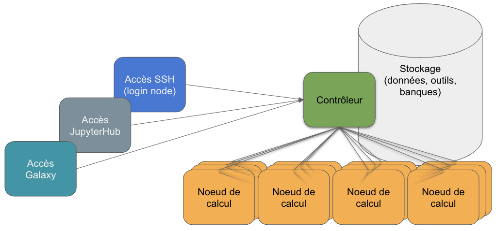
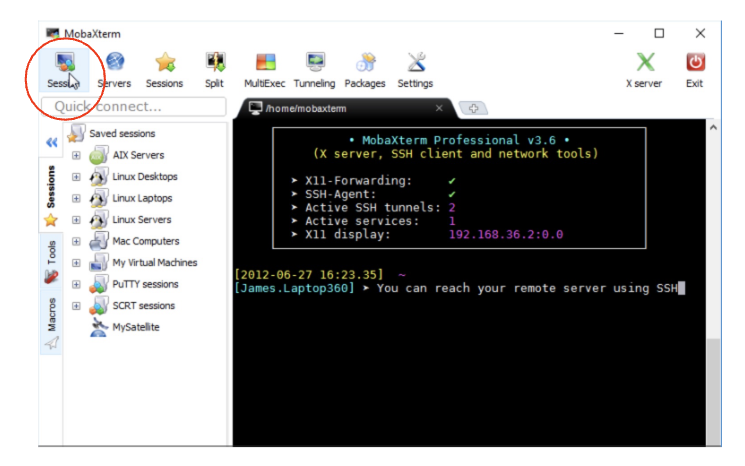

Le cluster de l’IFB
Contents
Le cluster de l’IFB#
Un session entière sera consacrée au cluster de l’IFB. Ici, il ne s’agit que d’une introduction pour s’y connecter.
A propos du serveur: Un contrôleur (controler) et des ouvriers (workers)#
Le cluster de calcul#
Regroupement de machines
Machines: “noeuds/node”
Gestion transparente pour les utilisateurs
Connexion depuis le monde entier
Nécessité de se connecter à distance
Accès partagé
De nombreux utilisateurs
Nécessité d’adopter des règles.
Gestion des ressources de calcul
Gestion des ressources de stockage
L’architecture d’un cluster de calcul#

Info: le serveur IFB-core-cluster#
Hébergé à l’IDRIS (http://www.idris.fr/)
Capacité actuelle 1904 coeurs physiques
soit 3808 coeurs “hyperthreadés”
Plus d’info
La connexion ssh vers le cluster#
ssh (secure shell)
Protocole sécurisé
les informations passant sur le réseau sont protégées (chiffrées)
Plusieurs outils pour la connexion
Via une application réseau comme MobaXterm
Windows
Permet l’accès à un terminal
Via un terminal
Linux ou MacOSX
Windows 10 (WSL2, Windows subsystem for linux 2)
Via une application web
JupyterHub
Se connecter depuis Windows avec MobaXterm (1)#
Session : ssh
Remote host : core.cluster.france-bioinformatique.fr
Username : Indiquez votre login
Pressez OK
Se connecter depuis Mac OSX ou Linux#
MacOSX#
Finder > Applications > Utilities > Terminal
Tapez la commande ci-dessous
Linux#
La localisation du terminal varie selon les bureaux (Faites-vous aider si vous ne trouvez pas).
Utilisez la commande ci-dessous
# Connection en ssh au serveur IFB
# Remplacez [login] par votre compte utilisateur
# Tapez votre mot de passe
ssh -Y [login]@core.cluster.france-bioinformatique.fr
Remarques
Le caractère # indique un commentaire, qui sera ignoré par le shell.
Le $ en rose représente l’invite de commande, qui varie selon les configurations.
La commande à taper dans votre terminal commence juste après l’invite de commande: ssh …
L’argument -Y permet d’ouvrir des fenêtres graphiques à distance (e.g. éditeurs)
Réserver des ressources#
Un programme disponible sur le controller (SLURM) permet de réserver des ressources (des processeurs sur des noeuds).
Vous verrez dans une autre session comment faire des réservations en ligne de commande avec SLURM.
Avec Jupyter, la demande de réservation des ressources (ouvriers) est gérée pour nous lors de la connexion.
Quand vous quittez Jupyter les ressources sont libérées